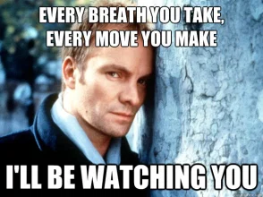

Kurze Antwort:
Alles!
...solange es mit Cyber zu tun hat!
Quellen: [1]-[6]
Lange Antwort:
"Uneinheitlich verwendeter Begriff, unter dem i.d.R. alle Konzepte verstanden werden, Städte mithilfe der Möglichkeiten neuer technischer Entwicklungen und der Informations- und Kommunikationstechniken im Hinblick auf Ökologie, sozialem Zusammenleben, politischer Partizipation etc. zu modernisieren und lebenswerter zu gestalten"
Quellen: [7]
Kurze Antwort:

Lange Antwort...
- Meta-Studie der Universität Budapest zu neun 9 "Leuchtturmstädten" in Europa
- Die Aktivitäten der Städte befassen sich primär mit:
- Effizienz
- Bürgerbeteiligung
- Lebensqualität
- Inklusion und Gleichberechtigung
- Konnektivität (Physikalisch und Sozial)
- Wissensaustausch
- Kostenersparnis
- Skalierbarkeit und Transferierbarkeit
- Schonung der Umwelt
- Weiterhin
- Technologie ist ein Teilaspekt
- Das Kopieren von Konzepten führt nicht zwangsläufig zum Erfolg
- Gleiche Ausrichtungen führen zu teilweise unterschiedlichen Ergebnissen
- Eine dynamische Anpassung der Ziele an die aktuellen Gegebenheiten scheint erfolgreicher zu sein, als eine langfristige Strategie ohne wiederkehrende Bewertungen
Quellen: [8]
Kurze Antwort:
Quelle: https://vublsts.wordpress.com/2013/10/09/music-surveillance-6-suspicion-driven-surveillance/
Lange Antwort...
- Informationelle Selbstbestimmung/Freiheit und Unabhängigkeit vom Staatsapparat (Beispiel: Berliner Südkreuz)
- Digital Divide - Gleichbehandlungsgebot aus Art.3 des Grundgesetzes
- Allgemeine Handlungsfreiheit aus Art. 2 Abs. 1 des Grundgesetzes und Freiwilligkeitsprinzip
- Abhängigkeit von durch Privatunternehmen bereitgestellter Infrastruktur
- “Need-to-Know-Prinzip” steht im Konflikt mit Datenzentralisierung
- Digital Resilience - Resilienz im Falle von Hackerangriffen, Stromausfällen, etc.
Quellen: [9] - [12]
Teile davon enthalten eventuell meine Meinung
- Schau hin! Was deine Stadt mit "Smart" macht
- Smart City ist mehr als Technologie
- Copy and Paste in unzureichend
- Das Konzept kann verschiedene Lebensbereiche sowohl positiv als auch negativ beeinflussen
- Die Jusos und die SPD sind in der Pflicht die Stadt gegen rein ökonomische Interessen und für die Menschen zu verteidigen!
- Danke für eure Aufmerksamkeit !
- Ein paar € gegen Rechtsextremismus, Rassismus und Antisemitismus!
- Quellen